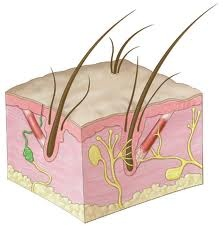
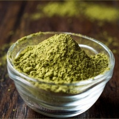

Trucuri pentru cresterea rapida a parului -
 Sari la conținut Acasa Par Ten Unghii Epilat Machiaj Barbati Set cadou Aparate si accesorii par Saloane Acasa Par Ten Unghii Epilat Machiaj Barbati Set cadou Aparate si accesorii par Saloane Prima pagină Hair styling Trucuri pentru cresterea rapida a parului Hair styling
Trucuri pentru cresterea rapida a parului
Actualizat la februarie 5, 2021 octombrie 21, 2020 Lasă un comentariu la Trucuri pentru cresterea rapida a parului ProcosmeticTi-ai dorit intotdeauna sa ai un par lung si frumos? Ai admirat mereu persoanele ce au o podoaba capilara de invidiat si ti se pare imposibil de realizat acest lucru? Fie ca ti-ai dorit sa faci o schimbare in viata ta si sa iti tunzi parul scurt si acum regreti acest lucru, fie parul tau are o crestere lenta, in articolul de astazi ne-am propus sa iti oferim trucuri si sfaturi legate de cresterea rapida a parului.
Suntem din ce in ce mai stresati si de aici pleaca o multime de probleme de sanatate, dar si probleme legate de aspectul fizic, iar una dintre cauzele majore cauzate de stres este caderea parului. Despre podoaba capilara am mai discutat si in articolele anterioare, insa articolul de astazi este despre prezentarea unor trucuri pentru cresterea rapida a parului. Viteza cresterii parului depinde de foarte multi factori precum genetica, alimentatie, ritualul de ingrijire al acestuia, dar si de produsele folosite.
Ingrijirea parului lung: sfaturi
Pentru a obtine un par lung, frumos si sanatos este nevoie sa urmezi cateva sfaturi. Daca deja te bucuri de un par lung, asta inseamna ca trebuie sa il intretii corespunzator.
Este foarte importanta igiena parului daca va doriti un par lung si frumos. Ce este foarte important la acest aspect este faptul ca nu trebuie sa faceti economii cand vine vorba de acest lucru. Sunt atatea game pe piata incat nu exista scuze ca nu gasesti formula potrivita parului tau. Probabil ca te intrebi ce produse ar trebui sa folosesti, de aceea am creat o lista special pentru tine: Sampon pentru cresterea parului rapid Cel mai bun produs pentru cresterea parului este samponul Indola Specialists. Acesta reduce caderea parului dupa 6 saptamani de aplicare si creste densitatea parului dupa 24 de saptamani. Stimuleaza cresterea parului si aduce numarul de foliculi activi la un nivel normal dupa 24 de saptamani. Acesta curata delicat scalpul si firele de par, contribuie eficient impotriva caderii parului, revitalizeaza fibrele capilare, intareste structura firelor de par, intinereste textura, asigura o crestere sanatoasa a parului, hidrateaza scalpul, sporeste densitatea parului, creste proportia radacinilor, stimuleaza regenerarea celulelor la nivelul scalpului, este ideal atat pentru femei, cat si pentru barbati. Indola Specialists Hairgrowth ser pentru cresterea parului este tratamentul inovativ ce ajuta in mod eficient la cresterea mai rapida si sanatoasa a parului. Indola Specialists Hairgrowth ser pentru cresterea parului 8×7 ml stimuleaza regenerarea celulelor si activeaza circulatia sangelui la nivelul scalpului. Acest tratament de vitalizare si intarire a firului de par are efecte pozitive si in cazul caderii parului din cauze androgenetice. Reduce pierderea parului după 6 saptamani si sporeste densitatea acestuia dupa 24 de saptamani. Stimuleaza cresterea parului si regleaza proportia radacinilor de par sanatoase aproape de nivelul normal de 80 dupa 24 de saptamani. Aplicati pe parul umed realizand un masaj usor la radacina, apoi pieptanati. Incepeti tratamentul de crestere a parului cu samponul si loțiunea timp de 6 saptamani, continuati tratamentul in functie de rezultate. Atat samponul cat si serul sunt recomandate a fi folosite impreuna, pe o perioada de minim 6 saptamani si pot fi folosite atat de femei, cat si de barbati. Londa Professional Stimulating Sensation lotiune tonica 150 ml vitalizeaza si improspateaza instant scalpul. Are o formula exclusiv profesionala cu mentol si camfor. Se aplica o cantitate mica de produs pe scalp, masandu-se usor si se lasa in par. Nu se clateste. Masajul scalupului ajuta foarte mult in procesul de crestere a parului. Poti folosi chiar cateva pictaturi de ulei ca sa hidratezi scalpul. Este bine cunoscut faptul ca uleiul de ricin este un bun stimulant al cresterii firului de par si stimuleaza microcirculatia sangelui la nivelul scalpului. Truc: Daca uleiul este putin cald, este si mai eficient. Foloseste balsam si masca tratament . Cu ajutorul balsamului, dar si folosind o masca tratament pentru par impiedici ruperea firului de par. Balsamul si masca au rolul de a descurca parul, de a-l face usor de pieptanat, hidratat si moale. Dupa aplicarea samponului, foloseste la fiecare spalare, balsam specific tipului tau de par, iar masca o poti aplica fie dupa fiecare spalare, fie mai rar. Taiati varfurile. Contrar asteptarilor, taierea varfurilor nu inseamna impedicarea cresterii parului, ci dimpotriva. Acest lucru accelereaza cresterea parului si il ajuta sa devina mai puternic. Varfurile despicate impiedica cresterea parului, asadar, nu ezita sa tai aproximativ 1-2 centimentri la 6-8 saptamani pentru a-l ajuta sa se regenereze. Evita sa folosesti placa, uscatorul sau ondulatorul. Utilizarea excesiva a surselor ce genereaza incalzirea firului de par inhiba cresterea acestuia. De aceea, atunci cand este posibil lasa parul sa se usuce natural, fara a folosi foenul si evita folosirea ondulatorului si a placii. Daca totusi le folosesti, ai grija sa aplici inainte un ser cu protectie termica.Cei mai buni nutrienti ce stimuleaza cresterea parului
Se spune ca frumusetea vine in primul rand din interior. De aceea, o alimentatie corecta este primul pas in obtinerea unui par lung. Dieta este extrem de importanta in procesul de crestere al firului de par. Este necesar sa tinem cont de sfaturile nutrionistilor si sa suplimentam dieta cu urmatorii nutrienti:
Zinc. Conform studiilor, deficienta de zinc este una dintre principalele cauze ale caderii parului. De aceea este important sa suplimentam dieta cu alimente bogate in zinc, precum: stridiile, nautul, lintea, fasole, legumele cu frunze verzi precum broccoli, spanac sau nuci si seminte.
Vitamina C are un puternic rol antioxidant si ajuta la mentinerea sanatatii scalpului si firului de par. Aceasta ajuta la producerea de colagen ce mentine tesutul parului, prevenind despicarea varfurilor si ruperea firului de par. Cea mai mare cantitate de vitamina C se gaseste in ardeiul gras galben, dar si in citrice si coacaze negre.
Biotina este o forma de Vitamina B ce se regaseste in alimente precum migdalele, ouale, somonul,banana. Aceasta stimuleaza cresterea si regenerarea parului.
Fier. Lipsa fierului in organism determina caderea parului, la fel ca in cazul deficientei de zinc. Este recomandat consumul de carne rosie, organe, spananc, linte, fasole deoarece acesta se absoarbe cel mai bine.
Tratamente naturiste
Ulei de ricin. Asa cum mentionam mai sus, uleiul de ricin este binecunoscut pentru beneficiile acestuia asupra firului de par. Acesta este o importanta sursa de Vitamina E, Omega 6, Omega 9 si alte substante extrem de benefice scapului si firului de par. Pe langa faptul ca uleiul de ricin stimuleaza cresterea parului, acesta indeparteaza matreata, ingroasa firul de par, ii ofera stralucire, previne uscaciunea scalpului si al firului de par, dar impiedica si despicarea varfurilor.
Albus de ou. Tot mai multe persoane folosesc metoda albusului de ou ca si tratament, deoarece acesta contine numeroase vitamine ce hransesc firul de par. Este extrem de simplu de preparat si de aplicat. Sparge 2 oua, separa galbenusul de albus, iar apoi bate albusururile cu ajutorul unui tel. Aplica pe par si lasa-le sa actioneze 30 min, apoi spala parul ca de obicei. Parul va fi mai sanatos, mai puternic si va creste mult mai repede decat de obicei.
Bea multa apa. Parul are nevoie de multa hidratare, asadar incearca sa bei cel putin 2 litri de apa pe zi. In cazul in care nu esti una dintre persoanele ce beau multa apa, poti opta pentru ceaiuri reci sau smooth-uri.
Apa in care ai fiert cartofii. Cartoful are un continut ridicat de vitamine, in special cele regasite in complexul de B. Se fierb 2 cartofi de marime medie nedecojiti intr-un litru de apa. Se lasa la racit, apoi lichidul se strecoara si se aplica pe par dupa ce a fost spalat in prealabil.
Asadar acorda o mare atentie alimentatiei, produselor de ingrijire folosite si in curand te vei putea bucura de un par lung, sanatos si frumos!
cresterepar indola procosmetic samponcresterepar shampoo
Navigare în articole
Articolul anterior Invata cum sa realizezi machiajul Smokey Eyes acasa Articolul următor 5 idei de machiaj pentru HalloweenS-ar putea să-ți placă și
Actualizat la aprilie 27, 2021 septembrie 20, 2017Cum sa arati mai tanara cu o vizita simpla la coafor
Actualizat la martie 18, 2021 aprilie 21, 2019Cum sa iti alegi samponul corect
Actualizat la aprilie 27, 2021 octombrie 10, 20175 motive pentru care sa folosesti produse profesionale pentru parul tau
Actualizat la aprilie 20, 2021 noiembrie 10, 2017Salon International Londra 2017
Lasă un răspuns Anulează răspunsul
Articole Recente
7 mituri despre ingrijirea parului Tu stii cum sa alegi rujul potrivit? Trucuri pentru ingrijirea parului pe timpul verii Totul despre manichiura clasica 10 trucuri pentru epilarea acasa Cum sa alegi vopseaua potrivita pentru sprancene?Categorii
Categorii Selectează o categorie Cosmetica Hair styling Make up Manichiura Sanatate Copyright 1997-2020 Procosmetic.ro Vandana Lite | Developed By Blossom Themes .Propulsată de WordPress . Sus